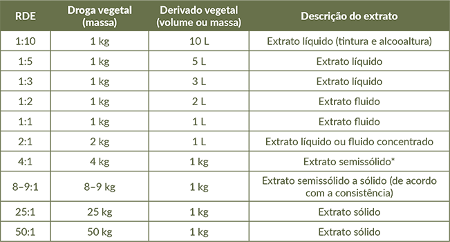

Todos os derivados/preparações vegetais apresentam a chamada razão droga:extrato (RDE), às vezes chamada de razão droga:derivado (RDD). Essa razão corresponde à relação entre a massa de droga vegetal empregada na produção do derivado e a quantidade final do derivado, expressa em peso (p/p) ou volume (p/v).
Relação droga:extrato (RDE) de diferentes derivados/preparações vegetais

Fonte: Adaptado de Pereira et al. (2023, p. 293).
*Passa a ser medido por massa, e não por volume.